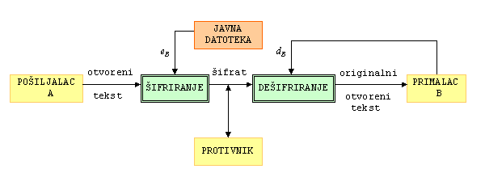

Godine 1976. Whitfield Diffie i
Martin Hellman
su ponudili jedno moguæe rješenje problema razmjene kljuèeva,
zasnovano na èinjenici da je u nekim grupama potenciranje puno jednostavnije od logaritmiranja.
Pretpostavimo da se osobe A i B žele dogovoriti o jednom tajnom sluèajnom elementu u ciklièkoj grupi G, kojeg bi onda poslije mogli koristi kao kljuè za šifriranje u nekom simetriènom kriptosustavu. Oni taj svoj dogovor moraju provesti preko nekog nesigurnog komunikacijskog kanala, bez da su prethodno razmijenili bilo kakvu informaciju. Jedina informacija koju imaju jest grupa G i njezin generator g.
Diffie-Hellmanov protokol za razmjenu kljuèeva:
|
Njihov protivnik koji može prisluškivati njihovu komunikaciju preko nesigurnog komunikacijskog kanala zna sljedeæe podatke: G, g, ga, gb, te treba iz ovih podataka izraèunati gab. Ako protivnik iz poznavanja g i ga može izraèunati a (tj. ako može riješiti problem diskretnog logaritma), onda i on može pomoæu a i gb izraèunati gab.
Diffie i Hellman se smatraju zaèetnicima kriptografije
javnog kljuèa.
Ideja javnog kljuèa se sastoji u tome da se konstruiraju kriptosustavi
kod kojih bi iz poznavanja funkcije šifriranja eK
bilo praktièki nemoguæe (u nekom razumnom vremenu) izraèunati
funkciju dešifriranja dK.
Tada bi funkcija eK mogla biti javna. U provedbi
ove ideje kljuènu ulogu igraju tzv. osobne jednosmjerne funkcije.
Za funkciju f kažemo da je jednosmjerna (one-way)
ako je f lako, a f -1 teško izraèunati.
Ako je pritom f -1 lako izraèunati ukoliko nam je
poznat neki dodatni podatak (trapdoor - skriveni ulaz), onda
f nazivamo osobna jednosmjerna funkcija.
Uoèimo da se i u klasiènoj kriptografiji tajnost u suštini zahtijeva samo od funkcije
za dešifriranje dK. Banalan primjer: kod Cezarove šifre nije problem što svi
znaju da se slova šifriraju tako da se pomièu za 3 mjesta udesno, veæ je problem što iz tog podatka
baš svatko može zakljuèiti da se dešifriranje provodi pomicanjem za 3 mjesta ulijevo.
No, i kod svih ostalih kriptosustava koje smo dosad susreli, veza funkcija
eK i dK
je bila vrlo jednostavna, pa skrivanje jedne,
a otkrivanje druge funkcije nije imalo nikakvog smisla.
Kriptosustav s javnim kljuèem se sastoji od dviju familija
{eK} i {dK} funkcija za šifriranje
i dešifriranje (ovdje K prolazi skupom svih moguæih
korisnika) sa svojstvom:
|
Ako pošiljalac A želi poslati poruku x primaocu B, onda B najprije pošalje A svoj javni kljuè eB. Potom A šifrira svoju poruku pomoæu eB i pošalje primaocu šifrat y = eB(x). Konaèno, B dešifrira šifrat koristeæi svoj tajni kljuè dB: dB(y) = dB(eB(x)) = x.
Ukoliko grupa korisnika želi komunicirati na ovaj naèin, situacija je još jednostavnija. Naime, tada svi korisnici stave svoje javne kljuèeve u neku javnu, svima dostupnu datoteku. Sada B ne mora slati svoj javni kljuè osobi A, veæ A jednostavno proèita eB iz datoteke.

Ovdje se može postaviti pitanje kako osoba B može biti sigurna da joj je upravo osoba A poslala poruku. Naime, svatko ima pristup funkciji eB, pa se može lažno predstaviti kao osoba A. Dakle, postavlja se pitanje vjerodostojnosti ili autentiènosti poruke. To se može riješiti na sljedeæi naèin:
Neki kriptosustavi omoguæavaju èak da korisnici digitalno
potpišu svoju poruku. To je važno zbog toga što tada A ne može
kasnije zanijekati da je upravo on poslao konkretnu poruku.
Pretpostavimo da je
P =
C. Tada A može potpisati
poruku x tako da osobi B pošalje šifrat
dB(eA(z)) = dB(eA(dA(eB(x)))) = x.
Sada B zna sigurno da je poruku poslao A, jer je samo on mogao upotrijebiti funkciju dA. Da je umjesto te funkcije upotrijebljena neka treæa funkcija dC, kao rezultat ne bi dobili smislenu poruku. Nadalje, ukoliko bi A kasnije zanijekao da je on autor poruke, B bi mogao "sucu" pokazati poruke x i z. Sudac bi provjerio da vrijedi eB(x) = eA(z) i to bi bio dokaz da je A pošiljalac.
Glavne prednosti kriptosustava s javnim kljuèem u usporedbi sa
simetriènima su:
Pa ipak, u realnom svijetu kriptografija javnog kljuèa ne predstavlja zamjenu za simetriène kriptosustave. Ona se ne koristi za šifriranje poruka, veæ za šifriranje kljuèeva. Naime, osobe A i B komuniciraju pomoæu simetriènog kriptosustava s kljuèem kojeg su razmijenili pomoæu kriptosustava s javnim kljuèem. To se zove hibridni kriptosustav.
Osnovni razlog zašto se javni kljuè ne koristi za šifriranje poruka, jest da su algoritmi s javnim kljuèem puno sporiji (oko 1000 puta) od modernih simetriènih algoritama.
Drugi nedostatak kriptosustava s javnim kljuèem jest da su slabi na napad "odabrani otvoreni tekst". Ako je y = e(x), gdje otvoreni tekst može poprimiti jednu od n vrijednosti, onda, buduæi je e javna, kriptoanalitièar treba samo šifrirati svih n moguæih otvorenih tekstova i rezultat usporediti s y. Tako neæe otkriti tajni kljuè d, ali æe otkriti otvoreni tekst x. Jasno, ovaj napad je primjenjiv ako je n mali (npr. ako je x neki iznos u kunama za kojeg je razumno pretpostaviti da je manji od 1000000).
U modernoj kriptografiji, koja se koristi u komercijalnom svijetu
(tipièna situacija je da osoba A želi kupiti nešto od osobe B preko
interneta), pojavljuju se, uz klasiène, i neki sasvim novi problemi:
Kako smo veæ rekli, kriptosustavi javnog kljuèa su mnogo sporiji od simetriènih. Stoga je njihova uporaba u 1. problemu ogranièena na razmjenu kljuèeva za simetriène šifre. S druge strane, "digitalni potpisi", koji se koriste u rješavanju 2., 3. i 4. problema, zahtijevaju uporabu kriptografije javnog kljuèa.
| Web stranica kolegija Kriptografija | Andrej Dujella - osobna stranica |